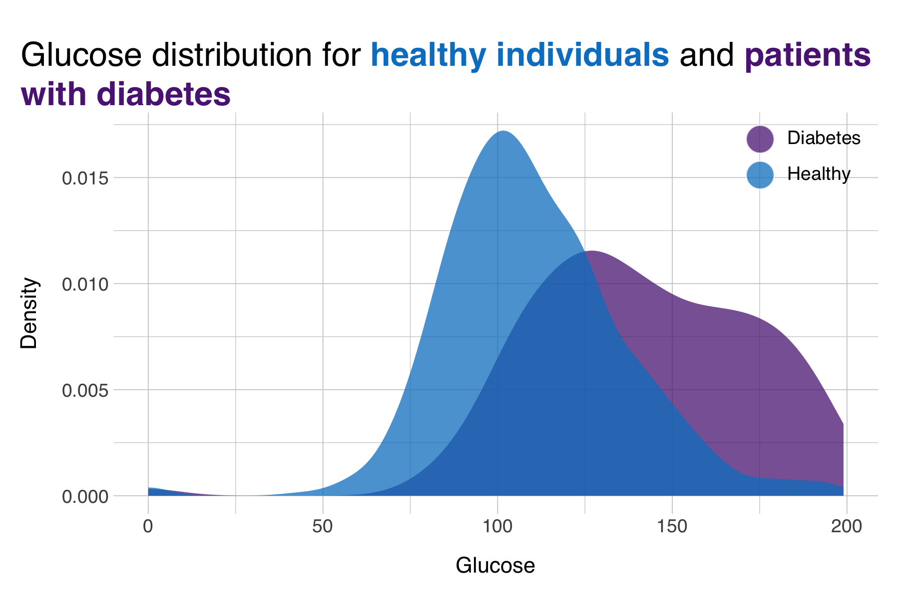
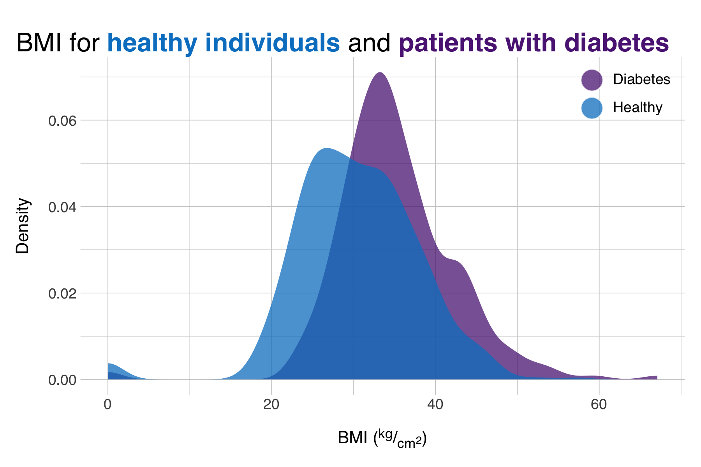

Johanne Døe
PhD Candidate
Introduction
- A bold claim to start the presentation
- "Another sentence relevant for the introduction"
- An example sentence with an accented word
- But this is what a slide would look like with a bulleted list
Introduction
- Here's an example of two columns of text
- This time aligned at the top! How exciting.
- This list contains no relevant info I think
- but well.. here we are
- I'm not sure anyone really uses two-column text blocks
- It seems to me it makes the slide very busy
- Good time to show the source style though
Introduction
- This is a two-column slide
- This time with a bulleted list with dots
- This is also the first of a set of vertical slides, click down to access the next slide

Figure 1 - Glucose distribution between HCs and diabetes patients
Introduction

Figure 2 - Glucose distribution between HCs and diabetes patients
- Oh no! more slides!
- Vertical slides are great at grouping related slides
- Be careful about using them though, because the geometry of the presentation might suffer
- Also check out the notes for this slide!
Look! A table!
| TOP & BUPGEN | UK Biobank | |
|---|---|---|
| Age | Younger (some range) | Older (another range) |
| Another feature | 0.42 (p = 0.01) | 0.39 (p = 0.65) |
| Variable ABC | 42% | 52% |
| Fancy, two rows | TOP: 345 | 1650 |
| BUPGEN: 87 | 4612 | |
| Availability | on TSD | |
| Last variable | Bliep | Bloep |
| Source: someone in a bar told me | ||
Large image example

Large image example (with black background)
important!
This is a flashing text
not sure what you'd use this for
but it can be fun?
Section divider slides
Other options are displayed in the vertical slides
Section divider slides
Other options are displayed in the vertical slides
Section divider slides
Other options are displayed in the vertical slides
Section divider slides
Other options are displayed in the vertical slides
Section divider slides
Other options are displayed in the vertical slides
Section divider slides
Other options are displayed in the vertical slides
"The data may not contain the answer. The combination of some data and an aching desire for an answer does not ensure that a reasonable answer can be extracted from a given body of data"
John W. Tukey (1986)
"The data may not contain the answer. The combination of some data and an aching desire for an answer does not ensure that a reasonable answer can be extracted from a given body of data"
John W. Tukey (1986)
"The data may not contain the answer. The combination of some data and an aching desire for an answer does not ensure that a reasonable answer can be extracted from a given body of data"
John W. Tukey (1986)
These blockquote-style slides are available in all other NORMENT colors too.
Like in the section divider slides
Yellow isn't very pretty though...
Code Example
data <- read_csv("data.csv")
data %>%
mutate(outcome_label = case_when(outcome == 1 ~ "Diabetes",
outcome == 0 ~ "Healthy")) %>%
ggplot(aes(x = glucose, fill = outcome_label)) +
geom_density(alpha = 0.75, color = "transparent", key_glyph = "point") +
labs(title = str_glue("Glucose distribution for **healthy individuals** and **patients with diabetes**"),
x = "Number of pregnancies",
y = "Density",
fill = NULL) +
scale_fill_norment(discrete = TRUE, palette = "logo",
guide = guide_legend(override.aes = list(size = 6, shape = 21))) +
theme(plot.title.position = "plot",
plot.title = element_textbox_simple(face = "plain"),
legend.text = element_markdown(size = 9),
legend.position = c(0.9,0.9),
plot.margin = margin(20,10,10,10, unit = "pt"))